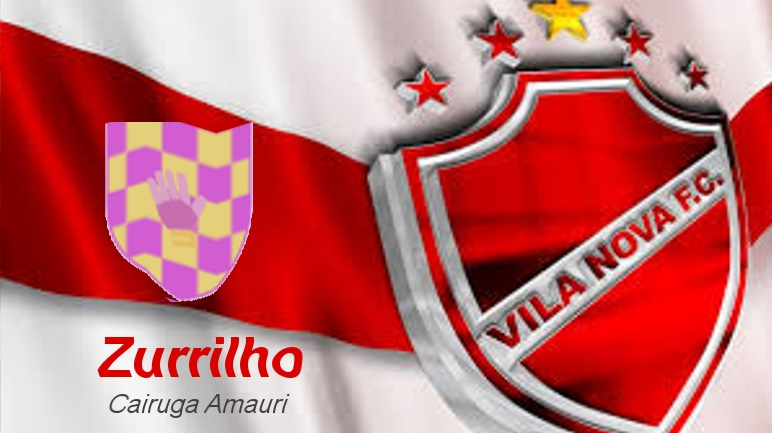
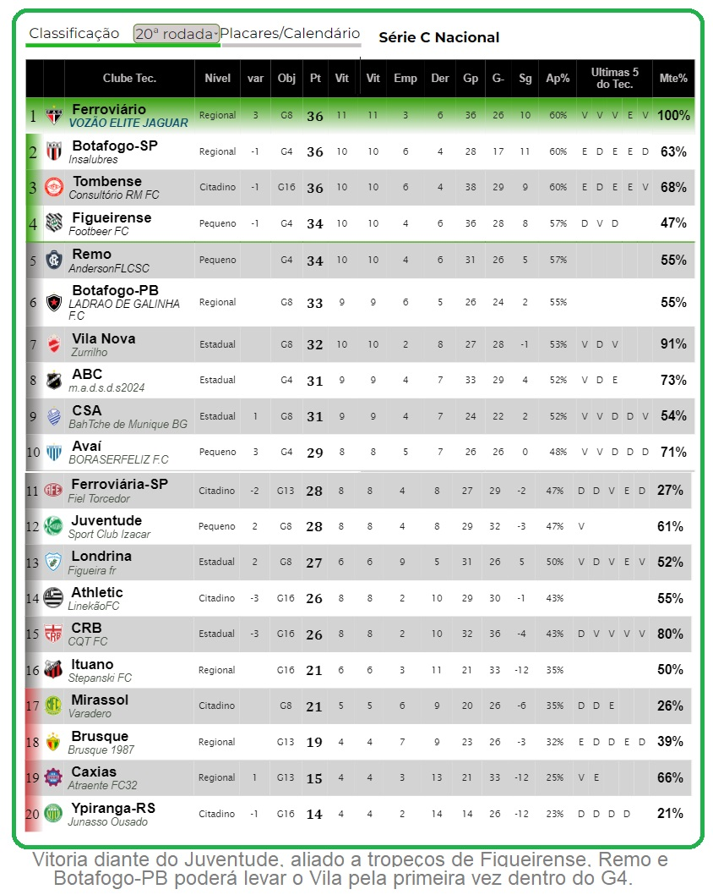

Campeonato de Cartola
A vitória no cartola é o sucesso do seu time!


Redação Cartola - 02/08/2024 - 18h25min 
Sétimo Colocado da série "C" e candidato real ao G4 da terceirona (dois pontos a menos que o quarto), Vila Nova de Minas fechou contrato com um dos mais antigos integrantes da nossa liga: professor "Zurrilho", do cartoleiro Cairuga Amauri, foi o escolhido para ser o segundo técnico a liderar o "tigão do serrado" na luta pelo acesso à série "B" de 2025. ùltimo trabalho do treinador foi o CRB, sendo desligado ao final da sétima volta. Com pretenções iniciais de G8, clube agora quer mais: com comissão interina deixando o cargo para a chegada do "Zurrilho" a somente dois pontos do Figueirense, atual quarto colocado, a convicção do departamento de futebol é que há condições encerrar a temporada assegurando o nome do Vila entre os 20 clubes da segundona do ano que vem. Para tanto, caminhada começa neste próximo sábado, diante do Juventude do "Spor Clube Izacar", recém impossado no Alfredo Jaconi e que estará motivado em busca da segunda vitória consecutiva na competição. 